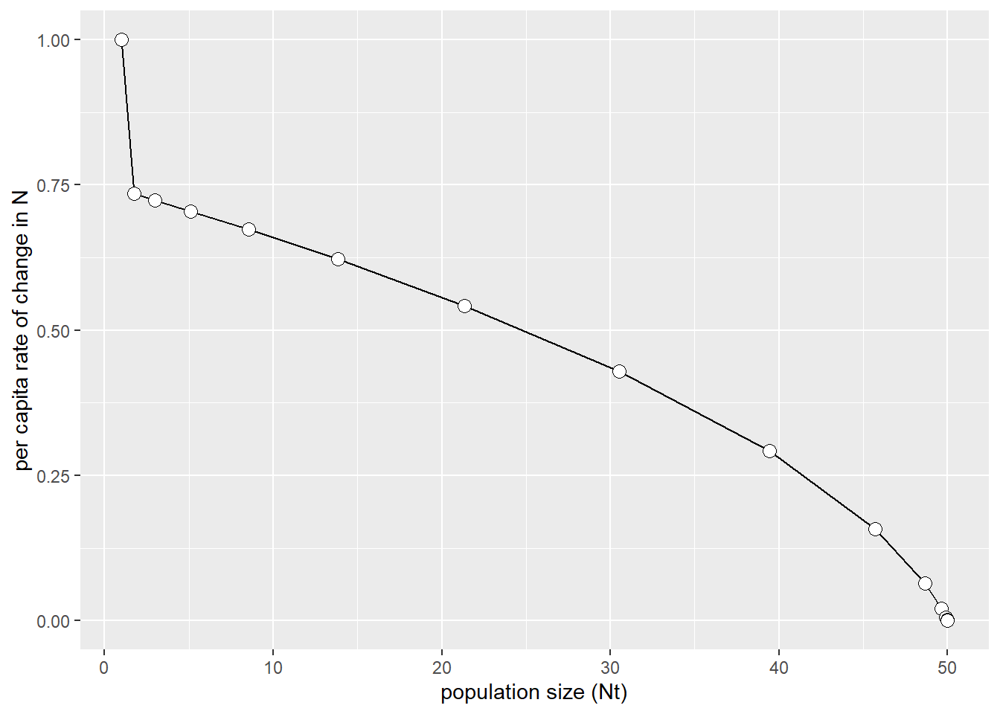

5 Thermal Regimes of Streams
Learning Objectives
After completing this activity you should be able to
- Describe the thermal regime of a stream using a wide range of metrics to describe magnitude, frequency, duration, rate of change, timing, and variability of temperature.
- Use an example to explain how temperature variability impacts an ecosystem due to physiological reactions at an organismal level
- Distinguish between continuous/categorical (qualitative/quantitative) data
- Use data visualizations to better understand a data set and identify patterns.
- Use ggplot to create line plots to visualize quantitative trends over time.
- Use descriptive statistics to summarize, organize, and compare basic features of a data set across time periods (and sites).
- Use
group_by()andsummarize()to calculate summary statistics. - Choose an appropriate metric to answer a specific biological/ecological question.
For each of our modules we will have a project-folder with an Rproject, *.Rmd-files, and sub-directories for data, scripts, and results as described in our Rproject Tutorial. You should create a directory on your Desktop or Documents folder on your laptop (name it something like BI328) as a home directory for all of our project folders this semester.
Download the ThermalRegimes project folder. Once you have downloaded it, unzip the project directory into your BI328 directory. You can open the Rproj for this module either by double clicking on it which will launch Rstudio or by opening Rstudio and then using File > Open Project or by clicking on the Rproject icon in the top right of your program window and selecting Open Project.
Once you have opened a project you should see the project name in the top right corner1 Pro tip: If you run into issues where an Rmarkdown won’t render or file paths aren’t working (especially if things were working previously) one of your first steps should be to double check that the correct Rproj is loaded..
You should have a ThermalRegimes.Rmd in your project directory. Use that file to work through this lab - you will hand in your rendered (“knitted”) html-file as your homework assignment. So, first thing in the YAML header, change the author to your name. You will use this Rmarkdown file to record your answers.
We will need to install an additional package before we get started.
install.packages("lubridate")Before we get started load the R packages we will need to run our analysis2 Remember, anytime you close Rstudio or quite an R session you need to reload your libraries, even if you you already have objects in your environment from the previous session.
# load libraries
library(tidyverse)
library(lubridate)
library(knitr)
# load custom ggplot themes
source("scr/ggplot.R")5.1 Headwater Streams
We are going to spend the next few labs exploring various aspects of headwater streams. Before lab you should have used this description to get a broad overview.
► Question 1
Use the information from the brochure to list 4-5 key characteristics for each of the four major categories. Consider how dynamic each system is, whether you think it is a more/less homogenous habitat, how dynamic it is, what the main water source is, differences in terms of stream biota (plants and animals), and what sets is apart from the other types.
- Mountain Streams
- Valley Streams
- Spring-fed Brooks
- Warm Rocky Streams
► Question 2
Headwater streams provide rich habitats for a wide range of species. Use the concepts of temporal and spatial turnover to explain why they support such species-rich biological communities (5-10 sentences).
Like most ecosystems, headwater streams are expected to be impacted by climate change. You will find a more in depth description of the points made in the brief introduction you read in this Amendment to the NH Wildlife Action Plan.
► Question 3
Briefly outline two central challenges, describing both the change in environmental conditions, how you expect this to affect the biological community, and what strategies can be used to help minimize this impact.
Pointers
- Challenge One:
- Outline challenge
- impact on abiotic/biotic components of ecosystem
- strategies to overcome
- Challenge Two:
- Outline challenge
- impact on abiotic/biotic components of ecosystem
- strategies to overcome
5.2 Identify Metrics to characterize the thermal regime of streams
► Question 4
Stream biodiversity is closely linked to temperature through thermally-mediated ecological processes at all hierarchical levels. For each levels describe 2-3 factors that could be impacted by temperature.
Pointers
- At an organismal level, temperature [2-3 factors potentially impacted by temperature]
- At the population level, temperature [2-3 factors potentially impacted by temperature]
- At the community level, temperature [2-3 factors potentially impacted by temperature]
Arguably, temperature is one of the primary determinants of aquatic ecosystems. The water temperature is a single value that describes the state at a specific point in time in space and is generally measured in degrees Celsius. By contrast, the thermal regime of a stream consists of a time series describing the water temperature over time in a single locations, frequently this data set will comprise the annual regular sequence of water temperature at specific locations that are continuously monitored.
Let’s take a look at some real data from Back Mountain Brook (BMB).
5.2.1 Exploring temperature data sets
Let’s take a look at some real data from Back Mountain Brook (BMB) which is a headwater stream in southern New Hampshire.
BMB <- read_delim("data/BMB_water.txt", delim = "\t",
col_types = 'cnn')► Question 5
Take a quick look at the data frame you just read into R. The data you are looking at is what is generally described as raw data. These are the individual measurements that have not been summarized, processed, or analyzed in any way. Scroll through the individual rows amd briefly describe what information you can glean.
Pointers
- what variables do you have?
- what is being measured?
- what are units being used?
- what is the resolution of your data?
- what is the time frame?
- what is the spatial extent?
Currently, all of our date and time information is in a single column, we are going to split that information into individual columns.
BMB <- BMB %>%
mutate(Date_Time = parse_date_time(Date_Time, orders = "mdyHM"),
Date = as_date(Date_Time),
Day = day(Date_Time),
Month = month(Date_Time),
Year = year(Date_Time),
Hour = hour(Date_Time))Variables can be classified as either continuous, discrete, or categorical. Categorical variables have finite number of discrete groups that may or may not have a logical order. Similarly, discrete variables are numeric, with a countable number of values between any two given values. By contrast, continuous variables are variables with an infinite number of values between any two given values.
► Question 6
Take another look at the dataframe and determine what category each variable falls under.
Pointers
- Categorical: Variable X, …
- Continuous: Variable Y, …
- Discrete: Variable Z, …
We defined a thermal regime as the regular pattern of the change in water temperature over time in a single location. Just by looking at the 52039 lines of data it can be very difficult to describe the temperature regime for this stream. Data visualizations can help us better understand the underlying data. We can use Exploratory plots to better understand the data and discover hidden patterns in a data set. Once we have completed our analysis and understand the data, we will generate Explanatory plots to clearly communicate our insights with others.
Let’s start by making a heatplot which uses color to code for the magnitude of individual values. This will allow us to visualize every single data point in the data set.
ggplot(BMB, aes(y = Hour, x = Day, fill = Water_Temp)) +
geom_tile() +
facet_grid(Year ~ Month) +
scale_fill_viridis_c(option = "inferno") +
scale_y_reverse() +
theme(legend.position = "bottom")Figure 5.1: Hourly water temperature for Back Mountain Brook (2014-2020).

► Question 7
Our heatplot consists of individual panels of months in columns and years in rows. For each panel you can determine the temperature for every hour (y-axis) for each day (x-axis) by comparing the color of that tile to the scale at the bottom. Use the heatplot to identify major patterns in the data.
Pointers
5.2.2 Descriptive statistics to summarizing temperature data
The heatplot helps us get a better overview of the data set compared to scrolling through all the rows of raw data, but it is still a lot of data points to be considering. Generally, we need to summarize the raw data using descriptive or summary statistics3 Descriptive statistics describe and quantify the basic features of a data set with the goal of being able to summarize, simplify, compare, and organize the contents..
► Question 8
Start a list of metrics you could use to describe stream temperature of Back Mountain Brook. Try to be as specific as possible. Once you run out of ideas, compare notes with a few classmates around you and compile a single list of metrics. Discuss whether you can group them into categories based on what you have measured.
Pointers
We have previously used R to calculate fundamental descriptive statistics like the mean, standard deviation, minimum, and maximum temperature values using the functions group_by() and summarize().
-
group_by()allows you specify one or more variables (columns) to group you data by. For example, if you want to calculate the annual mean temperature, you would group by year. Once you do this,Rwill treat each group as independent; you can think of this having taken your data frame and creating subsets of your data where each subset would be the temperature measurements of an entire year. -
summarize()allows you to specify a metric that you want to calculate. For example, we can use the functionmean()to calcualte the mean.
Let’s start by calculating the annual mean temperature:
annual_mean <- BMB %>%
group_by(Year) %>%
summarize(mean = mean(Water_Temp))Let’s take a look at what that new data set looks like:
Table 5.1: Mean annual temperature Back Mountain Brook
| Year | mean |
|---|---|
| 2014 | 5.85 |
| 2015 | 8.15 |
| 2016 | 8.46 |
| 2017 | 7.89 |
| 2018 | 8.32 |
| 2019 | 7.67 |
| 2020 | 8.80 |
We can use the same syntax to calculate the standard deviation, minimum and maximum temperatures.
annual_stats <- BMB %>%
group_by(Year) %>%
summarize(mean = mean(Water_Temp),
std = sd(Water_Temp),
min = min(Water_Temp),
max = max(Water_Temp))Let’s take a look at that new data set4 Remember, a good description starts with a summary of the general patterns and then points out notable details. Note, a description does not interpret results, that usually occurs in the discussion..
Table 5.2: Yearly mean, standard deviation, minimum and maximum temperature for Back Mountain Brook.
| Year | mean | std | min | max |
|---|---|---|---|---|
| 2014 | 5.85 | 3.62 | 0.52 | 15.82 |
| 2015 | 8.15 | 5.94 | 0.05 | 19.01 |
| 2016 | 8.46 | 6.23 | 0.05 | 21.96 |
| 2017 | 7.89 | 5.94 | 0.02 | 19.41 |
| 2018 | 8.32 | 7.28 | -5.08 | 25.82 |
| 2019 | 7.67 | 6.47 | 0.02 | 24.27 |
| 2020 | 8.80 | 6.96 | 0.02 | 21.70 |
► Question 9
Give a brief description of the summary statistics you just generated.
Pointers
By calculating descriptive stats at the annual level, you have collapsed all the temperature values for a single year into one number. This means that we are losing a lot of information.
► Question 10
Use your new-found R skills to calculate monthly mean values. Consider that your data set contains more than one of each month when you group your data.
► Solution
Take a look at your summary stats. With the annual stats it was pretty straightforward to to compare values in a table - now you have a lot more values to look at. This is where a visualization might come in handy.
5.2.3 Visualizing the thermal regime of a stream
► Question 11
Consider how you might plot the monthly means to make it easier to discern the general pattern. Sketch out on a piece of paper what you think the figure will look like.
Pointers
- what should be on your x-axis?
- what will be on your y-axis?
- how many plots do you want?
Let’s learn how to use R to generate a few exploratory plots to visualize trends in our monthly means9 The comments (R ignores anything that comes after a # which allows us to add comments to our code, this is a helpful process not only for other people trying to understand your code but future-you will also thank you when they try to remember what current-you was plotting thinking).
ggplot(monthly_stats, aes(x = Month, y = mean)) + # specify which object to plot, what should be on x and y axis
geom_point() + # plot each value as a point
scale_x_continuous(breaks=seq(1, 12, by = 1)) + # plot values 1 - 12 (months) on x-axis
theme_standard # custom themeFigure 5.2: Mean monthly temperatures for Back Mountain Brook (2014-2020).

We can add a line that shows the general trend.
ggplot(monthly_stats, aes(x = Month, y = mean)) + # specify which object to plot, what should be on x and y axis
geom_point() + # plot each value as a point
geom_smooth() + # add a trendline
scale_x_continuous(breaks=seq(1, 12, by = 1)) + # plot values 1 - 12 (months) on x-axis
theme_standardFigure 5.3: Mean monthly temperatures for Back Mountain Brook (2014-2020). Blue line indicates trendline, grey area is 95% confidence interval
We can also create individual line plots for every year.
ggplot(monthly_stats, aes(x = Month, y = mean)) + # specify which object to plot, what should be on x and y axis
geom_line() + # connect values with a line
geom_point() + # plot each value as a point
facet_wrap(. ~ Year) + # create individual plots per year
scale_x_continuous(breaks=seq(1, 12, by = 1)) + # plot values 1 - 12 (months) on x-axis
theme_facetFigure 5.4: Mean monthly temperatures for Back Mountain Brook from 2014-2020.

Note how each plot is plotting the same information, but the different visualizations highlight different patterns. For example the first two plots make it easy to compare how similar mean temperatures is (or is not) for each month, while the last plot focuses on the regular pattern of change over time across years. This makes it easier to compare the shape of the plot for each year.
► Question 12
Practice your new found data analysis skills by generating a dataset of daily mean, minimum, and maximum temperatures.
► Solution
► Question 13
Practice your new found plot making skills by creating and additional 3-4 plots based on the various summary statistics you have calculated.
Suggestions


► Question 14
Pick two of the plots you have generated that you think best visualize the thermal regime of Back Mountain Brook and write a brief description of the data being shown, then discuss your results from both plots to describe the thermal regime of Back Mountain Brook.
Pointers
► Question 15
Discuss with your lab mate whether we have fully characterized the thermal regime of our stream or if you can think of additional metrics that might be useful. You do not need to add a written summary of your conversation.
5.2.4 A wide range of metrics are used to describe the thermal regime of a stream
We can group metrics describing the thermal regime of a stream into six categories: Magnitude, Frequency, Duration, Rate of change, Timing, and Variability.
► Question 16
Take the list of metrics given to you on the whiteboard and work your class mates to define each category and assign metrics to each category in the table below.
Now that we’ve thought more about individual facets of thermal regimes, let’s revisit the idea that stream biodiversity is closely linked to temperature through thermally-mediated ecological processes at all hierarchical levels.
► Question 17
For each of the ecological facets below identify a metric describing the thermal regime that would impact it and add it to your table accordingly.
- presence/absence of a species during certain time periods/locations
- mortality
- migration events
- reproductive timing
- individual stress
- competitive advantage
- metabolic demand
- shifts in timing/developmental stage of emergence
- life history transitions
- growth rate
- egg development
- disease susceptibility
- emergence timing
| Category | Definition | Example metrics | Biological/Ecological importance |
|---|---|---|---|
| Magnitude | |||
| Frequency | |||
| Duration | |||
| Rate of change | |||
| Timing | |||
| Variability |
5.3 Temporal variability of a thermal landscape impacts the ecoystem due to physiological reactions at an organismal level
In preparation for today’s lab you read Wilbur, Nathan M., et al. “Characterizing physical habitat preferences and thermal refuge occupancy of brook trout (Salvelinus fontinalis) and Atlantic salmon (Salmo salar) at high river temperatures.” River Research and Applications 36.5 (2020): 769-783..
► Question 18
Give a quick summary of the paper by stating the central question/hypothesis, how the question was answered (methods), key results, and key conclusions/applications.
Pointers
This paper focuses on brook trout and Atlantic salmon which are considered a cold-water adapted species. In the paper, the scientists were looking at thermal anomalies (“cold spots”) that can provide thermal refugia11 1 refugium, multiple refugia for brook trout during temperature anomalies. Similarly, headwater streams are important thermal refugia for salmonids which will migrate upstream during the warmer months.
A frequently cited reason for the importance of conserving and managing headwater streams is that they provide important climate refugia for cold-water adapted species as increasing temperatures exceed the thermal tolerance during certain times of the year.
► Question 19
Outline how you could use our data set to determine whether our headwater stream continues to serve as a thermal refuge for brook trout. Be specific in terms of which metric you want to use and why. Write out the individual steps you would need to take in order to calculate that metric for our data set, don’t worry about whether or not you can turn that process into code.
We will come up with the needed code to assess habitat suitability using the metric you have chosen and generate an appropriate summary.
Pointers
► Question 20
Briefly describe your results and then discuss whether or not you think Back Mountain Brook is a suitable thermal refuge for brook trout to migrate to during warmer months.
Pointers
5.4 Spatial variability within a thermal landscape allows aquatic organisms to maximize growth and survival
In addition to the temporal aspect, the thermal landscape (or thermalscape) adds a spatial component to characterize a spatially continuous temperature surface at a larger spatial scale. Back Mountain Brook is just one of many headwater streams in the Francestown/New Boston area that are all part of the same watershed.
► Question 21
Briefly discuss whether or not you think that a nearby headwater stream would have the same thermal regime to Back Mountain Brook, describe parameters that might result in them exhibiting different patterns and how different you think those patterns might be.
Pointers
► Question 22
Below is a code chunk that will pull in a data set of Scataquog Brook which is a nearby headwater stream. Assume that you’ve been given a limited amount of resources to preserve habitat to support local brook trout populations. Go through the steps listed below to compare the thermal regimes of the two streams to assist in deciding how to prioritize your funds.
- Read in the data set, briefly compare it to the
BMBdata set in terms of time frame covered and resolution, and argue whether or not you think that this is an appropriate data set to use for a comparison (3-4 sentences, make sure you support your argument).
SQB <- read_delim("data/SQB_water.txt", delim = "\t",
col_types = 'cnn') %>%
mutate(Date_Time = parse_date_time(Date_Time, orders = "mdyHM"),
Date = as_date(Date_Time),
Day = day(Date_Time),
Month = month(Date_Time),
Year = year(Date_Time),
Hour = hour(Date_Time))Calculate a series of descriptive statistics at different temporal resolutions (annual, monthly, daily) as you did for
BMBand create at least two visualization to compare the thermal regimes of the two headwater streams13 Remember, the easiest way to do this is to insert a new code chunk and just cut and paste the code from aboce and changeBMBtoSQB.Compare and contrast the descriptive statistics and visualization for the two headwater streams.
Pointers
- Use the same metric/method you chose above to specifically focus on habitat suitability for brook trout to create a
SQBdata set and describe your results.
► Solution
- Compare and contrast this metric for the two headwater streams to support your decision on which headwater stream to prioritize for habitat conservation.
Pointers
Page built: 2022-10-22 using R version 4.1.2 (2021-11-01)